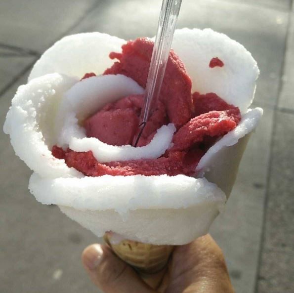
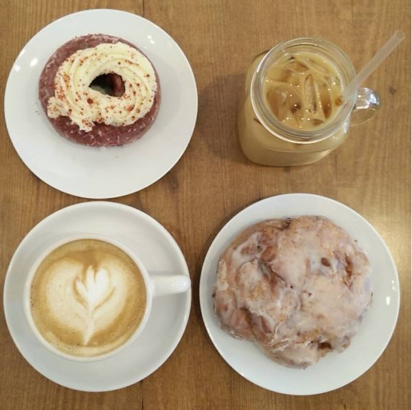
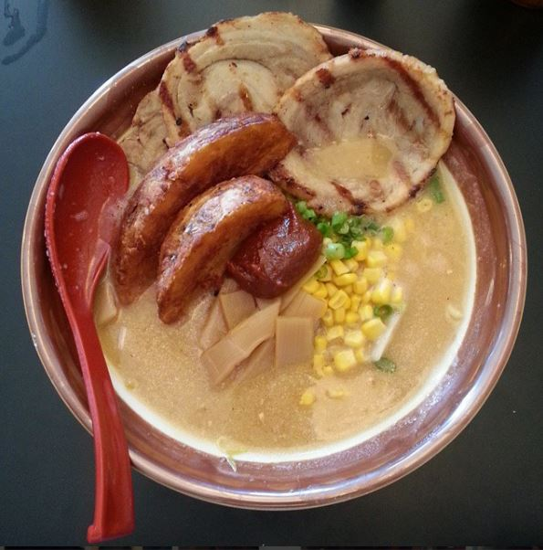

Kathiee's Food Adventures
Home
|
Cooking
My Chicago Food Adventures

Amorino Chicago

Cup & Spoon

Ramen Misoya
Places Yet to Visit in Chicago
Aloha Poke Co.
Lula Cafe
Stan's Donuts
Yuzu Sushi & Robata Grill
Food Places to Visit
Austin, Texas
Los Angeles, California
New York City, New York
Valentina's Tex Mex BBQ
California Donuts
10Below Ice Cream